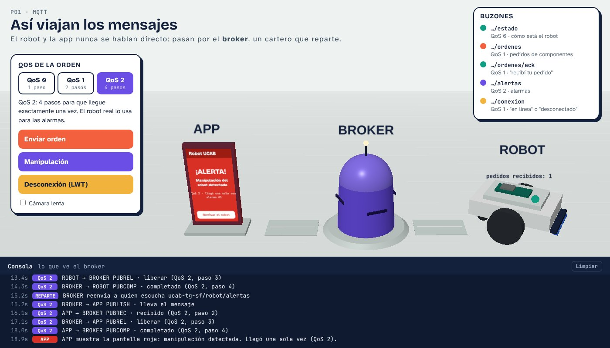
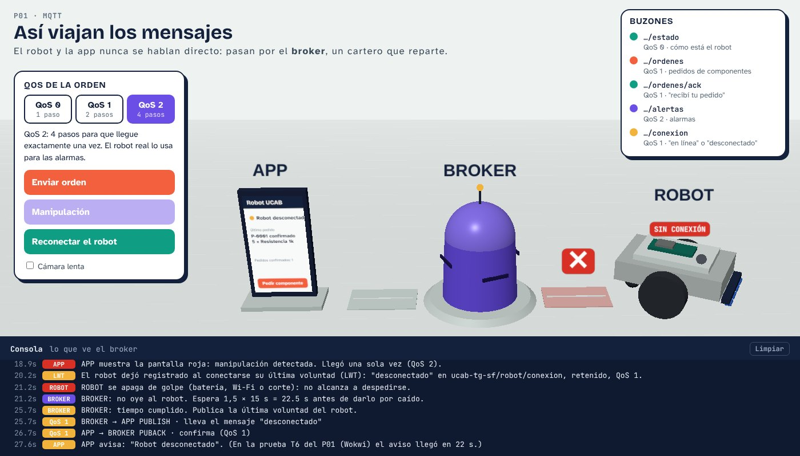

Prototipo P01 · Protocolo de Comunicación · Avance 1
P01: Así viajan los mensajes entre la app y el robot
Simulador 3D en Vivo (Mensajes, QoS y LWT)
Abrir en Pantalla CompletaCódigo Fuente ESP32 (.ino)
Cliente MQTT completo para ESP32 con manejo de suscripciones, LWT y telemetría de batería.
Resultados de Pruebas en Laboratorio
Pendiente por llegada de componentesCobertura Wi-Fi UCAB y Nivel de Señal (RSSI)
Mapeo de potencia recibida (dBm) desde el cuarto de componentes hasta el fondo del pasillo, evaluando zonas de sombra y desvanecimiento multicamino.
Esperando hardwareLatencia de Envío y Confirmación (RTT)
Cronometraje de ida y vuelta para 50 órdenes con QoS 1 en la red física del laboratorio frente al promedio de 4,1 s obtenido en simulación previa.
Esperando hardwareTiempo de Detección de Desconexión (LWT)
Validación práctica del corte abrupto de energía y verificación de que el broker publique el testamento (Last Will) en menos de 25 segundos.
Esperando hardwareCómo interactuar con el simulador
Observa el flujo de paquetes y paquetes de control entre los tres nodos del sistema.
- Selecciona el nivel QoSQoS 0, 1 o 2 (teclas 0 1 2). Observa cómo se multiplican los acuses de recibo.
- Dispara un pedidoUna esfera viaja App → Broker → Robot. El robot procesa y envía confirmación por el tópico de retorno. Tecla espacio.
- Simula manipulaciónEl robot activa la alarma antirrobo con QoS 2. La pantalla de la app cambia a rojo de emergencia. Tecla M.
- Prueba de desconexión (LWT)Corta la energía del robot: el broker detecta el silencio y avisa automáticamente a la app. Tecla L.
Fundamentos del Protocolo MQTT
Disparo sin Confirmación
Un solo paquete PUBLISH. Se emplea para el reporte periódico de telemetría (cada 2 s): si un paquete se pierde por ruido de radio, el siguiente lo actualizará.
Entrega Garantizada (Al Menos Una Vez)
Dos pasos: PUBLISH y confirmación PUBACK. Si el emisor no recibe el acuse, reintenta. Es el nivel empleado para las órdenes de búsqueda de componentes.
Entrega Exacta (Una Sola Vez)
Handshake de cuatro pasos (PUBLISH, PUBREC, PUBREL, PUBCOMP). Garantiza que ninguna alarma de seguridad se duplique ni se pierda.
Última Voluntad y Testamento
Mensaje preconfigurado en el broker durante el CONNECT. Si el robot sufre corte abrupto, el broker publica el aviso al expirar el keepalive.
Estructura de Tópicos del Sistema
| Tópico | Nivel QoS | Sentido | Propósito |
|---|---|---|---|
robot/estado | QoS 0 | Robot → Broker → App | Telemetría periódica cada 2 s (batería, modo, odometría) |
robot/ordenes | QoS 1 | App → Broker → Robot | Instrucciones de despacho (componente, cantidad, nodo destino) |
robot/ordenes/ack | QoS 1 | Robot → Broker → App | Confirmación de recepción con ID de pedido |
robot/alertas | QoS 2 | Robot → Broker → App | Alarma antirrobo por acelerómetro o choque frontal |
robot/conexion | QoS 1 | Broker → App | Estado de enlace y mensaje de Última Voluntad (LWT) |
Evidencias Fotográficas de la Simulación
Capturas del simulador y estados del protocolo. Haz clic para agrandar.




Firmware de Comunicaciones (ESP32)
Implementación en C++ con la biblioteca PubSubClient para microcontrolador ESP32.
Desplegar visor de código fuente en línea
/* P01 · Cliente MQTT para ESP32 */
#include <WiFi.h>
#include <PubSubClient.h>
const char* T_ESTADO = "robot/estado";
const char* T_ORDENES = "robot/ordenes";
const char* T_ACK = "robot/ordenes/ack";
const char* T_ALERTAS = "robot/alertas";
const char* T_CONEXION = "robot/conexion";
// ... (Código completo disponible al descargar robot_mqtt.ino)Arquitectura del Simulador
- protocolo.js: Lógica de la máquina de estados MQTT y temporizadores de LWT.
- main.js: Escena 3D, animación de partículas de paquetes y consola de depuración.
- pruebas.mjs: Validación en consola de los pasos de cada QoS.
Registro histórico de pruebas anteriores disponible en el Archivo Fase I y el Banco de Pruebas Web.